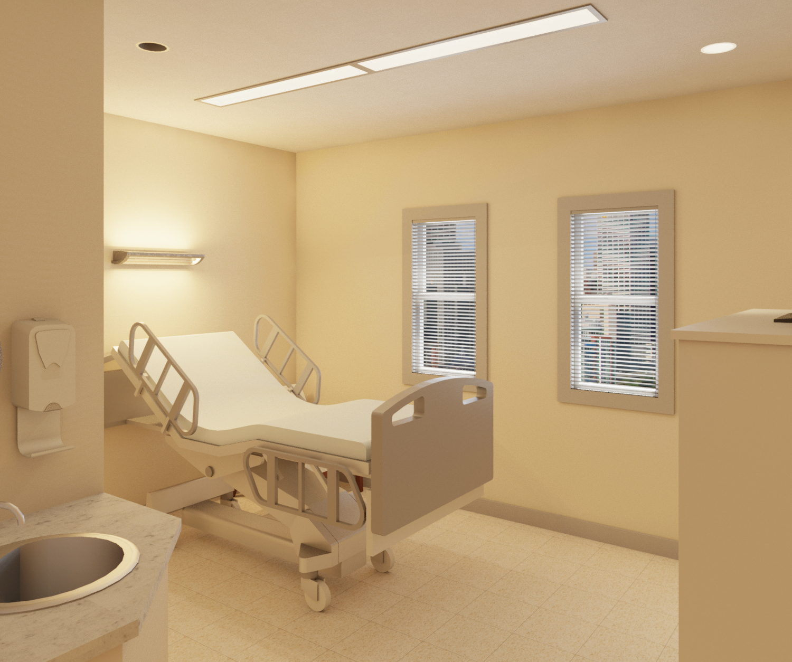
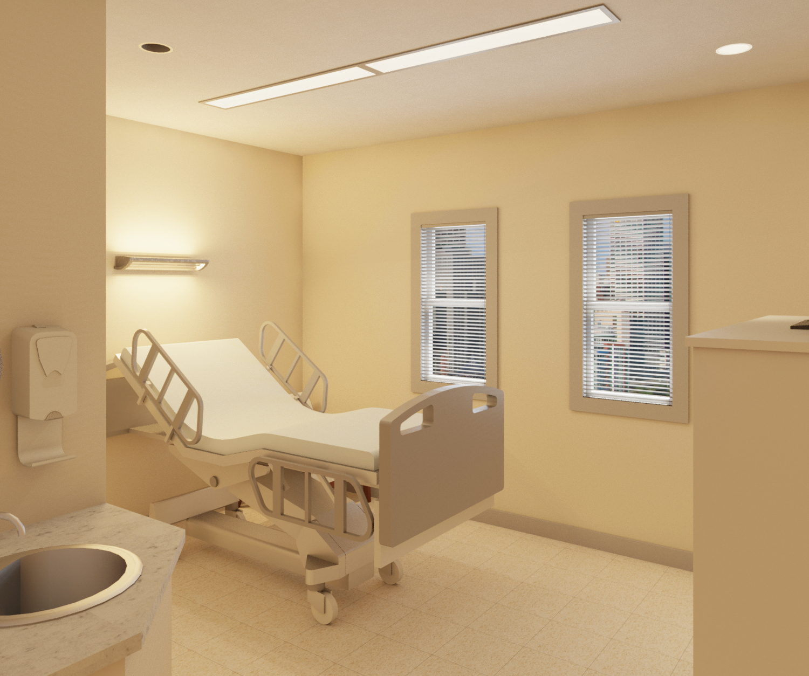

The accordion menu is a type of navigation menu that allows you to find the information you are looking for very quickly. The accordion menu has a maximum of three levels, which can be seen in the figure below.

The First level category, Healthcare, has the second level categories: General Information, Occupants, Specialty Information, and Summary beneath it. It is clear which of these second level categories have third level categories underneath them due to the icons next to them. Second level accordion menu categories with icons next to them have third level categories below them. Second level accordion menu categories without icons next to them do not have third level categories below them. In the figure above we have Healthcare > Speicalty Information > Lighting in the NICU selected.
Use the accodion menu to navigate the content of the background page quickly.
The content portion of the background page is where the user can gather the information necessary to understand the work the LRC, and the Light and Health Institute in particular, is working on. The content can be navigated via the accordion menu on the left side. To learn more about how to use the accordion menu, click the "Accordion" tab to the left of the help menu.


The visible portion of the electromagnetic spectrum includes wavelength between 380-780 nm that mechanisms in the human eye are sensitive to. The retina in the human eye can absorb these wavelengths, interpret them, and send signals to the brain to perceive. Visual interpretation components allow us to ‘see’ the environment around us, but light can do much more. Acting as a catalyst, light can provide the awareness for the body to know what time of day it is as well as a stimulus for an acute alerting e ffect. The circadian system is responsible for synchronizing the body around ('circa') the day ('dia').

The 24-hour pattern of light and dark that accompanies Earth’s rotation regulates the physiology and behavior of almost every living thing on the planet. For humans, light reaching the back of our eyes is the primary exogenous (external) cue that synchronizes the body’s endogenous (internal) master biological clock and thus our circadian rhythms to the solar day, essentially telling our bodies to do the right thing at the right time. Other, secondary exogenous cues include social activity, [1] consistent meal times, [2] and physical activity. [3] Sleeping and waking, feeding and fasting, and the regulation of core body temperature, blood pressure, and the secretion of hormones are just a few examples of circadian rhythms. The term “circadian,” coined by biologist Franz Halberg in 1959, is a blended word derived from the Latin circa (“about”) and dies (“day”).

Because the human circadian system free-runs at an average period of about 24.2 hours, which is slightly longer than the solar day, a daily cue of light and dark is required to advance the circadian system by about 10–15 minutes and reset the biological clock. [4] But what light gives, light can also take away. Exposure to light at the wrong times, which has become increasingly common since the advent of electrical lighting over a century ago, can desynchronize our circadian rhythms. Exposure to light at night (LAN), for example, is now a fact of life in our 24-hour society, and has been linked with poor sleep and a host of health and behavioral problems. Without this continual resynchronization, or in the presence of disruptions caused by the reversal of the human diurnal pattern experienced by those who work through the night (shift work disorder), the circadian system can become chronically disrupted. Circadian disruption has been associated with metabolic dysregulation (leading to weight gain, obesity, and type 2 diabetes) [5], certain forms of cancer [6], depression [7], and other maladies [8].
Four characteristics of light are crucial for the circadian system’s response to light:

Early research in animals [9, 10] and humans [11, 12] found that varying light levels at the eyes differentially affect the nighttime suppression of the hormone melatonin (a well-established marker of the circadian system) and the timing of circadian phase (i.e., either advancing or delaying the timing of the circadian system’s 24-h cycle). The greater the light level, in other words, the greater the melatonin suppression and the greater the advance/delay (or shift) in circadian phase.It should be emphasized, however, that some researchers caution that melatonin suppression cannot serve as a proxy for circadian phase shifting. [13, 14]

The human circadian system is maximally sensitive to short-wavelength (“bluish”) light, which has a peak wavelength occurring close to 460 nm and is maximally effective for stimulating the circadian system. In a manner similar to differences in light levels, short-wavelength light suppresses melatonin to a greater degree than longer wavelength (“reddish”) light (peak wavelength around 550 nm) and if experienced late in the afternoon or early evening will delay circadian phase. Long-wavelength light, on the other hand, provides minimal circadian stimulus (CS) and thus only nominally suppresses melatonin and does not affect circadian phase. Because light of all wavelengths evokes an alerting response at any time of day or night, long-wavelength light is especially useful for promoting late-day and early evening alertness without disrupting the circadian system. [15, 16]

Humans are far more sensitive to light stimulus at night than in the middle of the day. [17, 18] Experiencing high levels of light late in the day and early in the evening will delay circadian phase, causing us to fall asleep later than our usual bedtime and either sleep-in or feel tired on waking the next day. Conversely, experiencing high levels of short-wavelength light early in the morning will reset the master biological clock, advancing our circadian phase and helping to entrain our circadian system to the solar day. Longer exposure durations are also more effective at suppressing melatonin. [19]

While it is well-accepted that exposure higher light levels results in greater melatonin suppression, research also shows that the same light level at night suppresses melatonin to a greater degree when the exposure follows a 3-day exposure to dim light (1 lux) compared to a 3-day exposure to bright light (200 lux). [20] A related study following using a lower level typical of indoor illuminance levels (90 lux) for the nighttime bright light exposure also showed significantly greater delays in circadian phase.
When appropriately specified according to these four characteristics, light exposures can ameliorate symptoms of seasonal affective disorder, [21] increase sleep efficiency in older adults (including those with Alzheimer’s disease), [22-24] promote circadian entrainment in premature infants, [25] increase alertness at all times of day and night, [26-28] and improve alertness and certain types of performance during the post-lunch dip in performance. [29, 30]
Here are two examples disruptive and entraining lighting schemes. Typical commercial and residential lighting systems are considered to be inadequate for meeting the needs of circadian entrainment.

Sleep pressure naturally accumulates over the hours we are awake, and will decline during sleeping hours. To keep ourselves awake during the day, the body overcomes sleep pressure with alerting signals that are regulated by the circadian system. At a certain time of day, the magnitude of the alerting signal is not high enough to combat sleep pressure, and what is known as a ‘post-lunch dip’ occurs. A post-lunch dip occurs between 2-4pm, or 16-18 hours after a person went to bed the night before. This is why people can feel tired and unproductive around this time of day. To compensate for this, the LRC has shown the impact of using red light to have an alerting effect, without disruption of the circadian system. Using a personal light device contributing 50 lux of monochromatic red light at the eye has been shown to increase alertness. Similar to a cup of coffee, light can have acute alerting effects.

Hormones are the signals sent as messages from the brain and into the body. Melatonin and cortisol have inverse functions and released at differing times from one another. Melatonin is released at night as an ‘activity to non-activity’ signal, in humans, to get the body to wind down and sleep. Cortisol is the signal in the morning, for humans, to get the body ready for the change from non-activity to activity, and begins to alert the body to wake up. Melatonin is an anticipatory hormone, meaning its signals are sent out in anticipation of sleep time. The body is told that it is time to wind down with the process the process called dim light melatonin onset, or DLMO which occurs during nighttime hours and in dark conditions. And just like it is natural for the body to take between 10-20 minutes to fall asleep, the body should know to slowly wake itself up, rather than abruptly waking up in the middle of a sleep cycle. For example, if a person has a rhythmic sleep/wake pattern where bedtime is 11 PM and wake time is 7 AM, melatonin will begin to be released at 9 PM to instruct the body to start winding down. Melatonin levels will begin to drop in the early morning hours so the body will begin to wake itself up from its last REM cycle. A sharp peak of cortisol occurs 30-40 minutes after waking up , which is known as Cortisol Awakening Response (CAR) and is important to prepare the body for the upcoming day. Have you ever stayed up late in anticipation of sleeping in on the weekend after a long week of waking up at 6 AM for work only to find that you still wake up at 6 AM? This means that your body has a regulated sleep/wake cycle which is actually healthy. On the contrary, a sleepy Monday morning rolls around and your body is not ready to wake up at that time. Or if you are sleep deprived in general, CAR is reduced, making it even harder for a person to feel awake in the morning and ready to start the day. A few cups of coffee is one way to block the neurotransmitter in the brain that causes tiredness, but receiving morning white light at 800 lux at the eye can increase cortisol levels and in turn, alertness.
If the brain does not receive enough light through the eye in the morning hours, alertness and entrainment to the solar day will not occur. This entrainment process is known as phase advancing the circadian clock to be in line with the solar day. Furthermore, receiving too bright of light in the evening hours before bed will phase delay the circadian clock, pushing off the release of melatonin. Overall, being exposed to a proper robust light/dark schedule will entrain your body to the solar day as well as your daily schedule.
In terms of the hormones that are the internal messengers for the body, melatonin and cortisol secretion from the brain is controlled by the SCN (suprachiasmatic nucleus) which has a direct connection to the optic nerve, and input from the eye. This means that the input from light through the eye plays a large role in how the body’s circadian system communicates to the rest of the body.

The eye is a complex structure that is a visual relay system, taking messages from light energy, interpreting it, and sending signals to the brain for perceiving. Light first enters through the cornea where 2/3 of the bending of light happens at this air-to-cornea threshold. The eye is sensitive to the brightness of light, and the pupil changes in size to accommodate for the dynamic changes in light level throughout the day. The pupil will become a larger aperture in darker environments to let in more light in order to see better. Oppositely, in bright environments, such as a sunny day, the pupil decreases in size to reduce the discomfort from bright and glary sources. This expansion and contraction is controlled by the ciliary muscle.
When light enters through the convex shaped lens, it will bend the light and direct it to the macula where it is focused. The fovea is responsible for sharp central vision, where we can detect fine detail and colors. It makes up 2 degrees of the whole retina, yet we rely on it heavily for discrimination of detail. The retina contains photoreceptors that are sensitive to wavelengths in the visible spectrum (approximately 380-780 nm). The way light within this spectrum interacts and bounces off surfaces and into the eye is what allows us to see. The tissues in retina are an extension of the brain, so it plays an important role in relaying information from the environment to the brain to perceive. Information that the photoreceptors in the retina perceive send signals through the optic nerve and into the brain. Since there is a break in the retina where the optic nerve is located, the optic disc creates a blind spot.

The visible spectrum of the electromagnetic spectrum contains wavelengths that a human’s eyeball is able to perceive. In other words, they speak the same language, and the mechanisms in the eye translate these signals for the brain to interpret.
For colors to be visible, a mechanism that can interpret the wavelengths must be in place. That is where the photoreceptors in the eye come into play. The eye is made up of photoreceptors in the fovea (central vision) and the surrounding retina (peripheral vision). The human eye has an inverted retina, meaning light goes past all the layers to the pigment epithelium layer which is located in the back of the retina. Here, it gets absorbed and sent back through the layers and exits through the optic nerve. Within the retina, color is distinguished by the cone photoreceptors. The eye contains three cone photoreceptors: long-, medium-, and short-wavelength cones. Each have a range of wavelengths they are sensitive to, and have a peak wavelength sensitivity. Long-wavelength cones have a peak sensitivity at 564 nm, medium-wavelength cones at 533 nm, and short-wavelength cones at 437 nm. As seen in the figure below, each photoreceptor has a range of wavelengths that they are sensitive to and will activate a response. The y-axis on the graph associates with how much absorption of light each photoreceptor is capable of at each wavelength.

Knowing these wavelengths associate to perceived color in the visible spectrum, the combination of signals all the cones receive go through the Bipolar “connector” cell layer that takes combined signals from different photoreceptors throughout the retina. The Ganglion layer then communicates with multiple bipolar layers to determine what electrical signal it wants to send to the brain. An oversimplification, but the takeaway is that the messages sent to the brain go through multiple layers of communication with one another, getting feedback and deciding on what message it will send to the brain. The brain then interprets this signal to determine what colors and image it ‘sees.’ Cones are unable to perceptive low light levels, so rods, another type of photoreceptor, will take over to distinguish between light and dark. The figure above depicts the connections of the components in the retina and the process light undergoes when traveling through the retina.
Cones are the photoreceptors in the eye responsible for color perception, and activated in light levels greater than 3 cd/m2. This type of vision is known as photopic vision. In addition to cones, another photoreceptor in the retina are rods that are activated in dim light conditions, less than 0.001 cd/m2, known as scotopic vision. Light levels between 0.001-3 cd/m2 activate both rods and cones, which is known as mesopic vision. Rods are absent in the fovea (central vision) and only present in the surrounding retina. The retina contains about 120 million rods and 8 million cones. The ratio of L:M:S cones is 32:16:1.

If you look at a dark sky at night, you will notice that you can only see very dim stars in your peripheral vision. This is because only your rods can detect such low light levels. If you try to look directly at it, it will seem to disappear because your central vision is only made up of cones that need higher light levels to be activated. This also explains that when your vision adapts to the dark when you’re outside at night, you can’t see color because cones don’t activate at such low light levels. The figure below shows a graph of the amount and distribution of rods and cones in the retina, with the center of the fovea being 0 degrees.

These are the photoreceptors concerned with visual perception, but what about a photoreceptor capable of entraining the circadian system?

In addition to rods and cones, the retina contains a recently discovered third type of photoreceptor whose focus is not visual perception, but is rather concerned with the circadian system. ipRGCs, or intrinsically photosensitive retinal ganglion cells are not located in the photoreceptor layer with the rods and cones. They are located in the layer right before the optic nerve and have a 1:1 connection to the brain, which is different than the L, M, and S cones. That means the signal the ipRGC gets goes directly to the part of the brain that is responsible for circadian entrainment. These photoreceptors also connect back to other layers and receive input from the other photoreceptors.
ipRGCs have a peak spectral sensitivity of 484 nm within the short-wavelength range, which is why the circadian system is more sensitive to shorter (blue) wavelengths and considered a “blue sky detector.” Light sources that contain higher concentration of shorter wavelengths, and less in the longer wavelengths in their SPD will have a larger impact on circadian entrainment.
Visual and non-visual parts of the brain receive information from the eye. The LMS cones and rods are responsible for instantaneous responses to light for visual purposes. The visual cortex is located in the back of the brain. The ipRGCs send its input directly to the SCN (suprachiasmatic nucleus) which is the location of the master circadian clock in the forefront of the brain. Though this connection is direct, the circadian (non-visual) system itself is slower to respond to light signals than the visual system. It is important to create lighting designs that accommodate for both visual and non-visual needs occupants.
Knowing this information, we can begin learning about how to do circadian lighting designs.
Figueiro et al. have proposed a 24-hour lighting scheme that maximizes circadian stimulation during the day and minimizes it at night, while maintaining good visibility at any time. The evidence suggests that high circadian stimulation during daytime waking hours can probably be achieved by receiving about 400 lux at the cornea of a 6500 K (cool-white) light source. Relatively dim ambient evening light (less than 30 lux at the eye) can be provided by light sources such as a 2700 K (warm-white) light source.

Throughout a day, daylight is dynamic in its associated CCT (correlated color temperature) along with intensity (brightness). Its robust routine starts with a sunrise around 2000 K, and early morning sun around 3500 K. Late morning and a ernoon daylight reaches 6000 K, and on a blue-sky day, 10000 K. The ladder down for the remainder of the day is mirrored, ending with dark skies, indicating that it is time for sleep. Being able to simulate the spectral qualities of sun-light and intensity throughout the day would provide the maximum efficiency for circadian rhythms. However, interior spaces don’t always have windows that can provide an entire space with the desired e ect of sunlight, and light schedules are typically dominated by electric lighting. The most e ective and e icacious electric lighting schedule would provide dynamic CCT and intensity throughout a day, with fixture spacing and distribution e icient for delivering the light to the eye.
If a dynamic CCT system is not available, a CS schedule can still be achieved using a single CCT that is dimmed for enhancement of a robust light/dark schedule. Since cooler CCTs (6500 K or 5000 K) have higher peaks in the ‘blue’ wavelengths (450-485 nm), these CCTs will have a larger impact on the CS scale and achieve 0.3-0.4 CS at lower light levels when compared to a warmer CCT, due to the peak spectral sensitivity of the circadian system being 460 nm. Since cooler CCTs such as 6500 K have more area or ‘power’ in the SPD curve under the shorter wavelengths (when compared to 2700 K), it will have a stronger effect on the on the biological clock. If overhead lighting alone is unable to provide su icient light levels to the eye to reach high CS levels, personal light devices are a great alternative. These devices can be placed on a desk or work area in front of an individual and provide extra light stimulus. In the morning hours, the light device can provide 30 lux of monochromatic blue light at the eye.

High circadian stimulation during the day and low circadian stimulation during the evening can be achieved using a combination of daylight and electric light sources. Daylight can certainly be an e ective light source for regulating the circadian system. Outdoor lighting has the ideal quantity, spectrum, distribution, timing, and duration, but it should not be assumed that daylight in buildings will always provide people with a suitable circadian light pattern. Again, a quantitative analysis of daylight in the space should be carefully made because the amount of daylight varies considerably throughout a building. Daylight levels in a room drop very quickly as the distance from the window increases; daylight levels are quite low 3-4 meters away from a window, even on a sunny day. It should also be noted that if sunlight from the window penetrates the room, discomfort glare may cause occupants to draw blinds or shades, eliminating daylight entirely from the space. Since it cannot be assumed that daylight in buildings is always going to be a solution for circadian entrainment, electric light must always be considered.
The relatively dim evening lighting scheme is entirely consistent with current lighting recommendations and practice, and although the light levels recommended for daytime applica-tions are relatively high compared to current practice, they are not di icult to achieve, particularly if controls are incorporated into the design.
The provided template gives a guideline for components necessary for circadian design. Go through the following categories to learn more about each of the factors.
Are you a lighting designer or manufacturer interested in learning more about how to approach a circadian lighting design?
Are you an occupant looking to promote circadian entrainment in your working/living environment?
Watch this video to learn more about the future direction in lighting for health.
The circadian system is the master clock of the body. The most effective time-giver for the circadian clock in the brain is light through the eye. The circadian system naturally regulates itself on a 24.2-hour cycle, and bright light during the day, and more effectively blue light, or light containing a higher concentration of shorter wavelengths is important to advance your circadian clock to be in sync with the 24-hour solar day. Light that gets to the eye and contains qualities that stimulate the circadian system we call circadian stimulus (CS). This metric takes into account spectral qualities of a light and how much is needed at the eye to create a response. On a scale from 0.0-0.7, the target CS changes throughout the span of a day, starting with a higher CS during the daytime (between 0.3-0.4), and lower at night (< 0.1). Occupant type, time of day, and duration contribute to what CS should be targeted. The biological clock is responsible for keeping all hormones and bodily functions regulating on a cycle. A major one being melatonin, the sleep hormone. Being an anticipatory hormone, and in nighttime and circadian dark conditions, melatonin will be released 2 hours before your body thinks it’s bedtime. If you are not exposed to a robust light/dark schedule, your body is in constant circadian darkness and can’t regulate hormones at the proper time they’re supposed to be released. Short-term circadian disruption can cause social jet-lag, decreased performance, bad mood/behavior, and decreased alertness throughout the day. Long-term circadian disruption can lead to increased risk of sleep disorders, depression, cardiovascular disease, diabetes, obesity, and even cancer. Whether you want to have a healthier diet, better exercise routine, more energy, better sleep, better mood, or reduced risk of disease, proper circadian entrainment is the origin to which these initiatives can be achieved.
Click here to download a PDF summary of circadian fundamentals.

When deciding on a CS schedule, it is important to consider certain parameters. Determining what maximum CS value to target and for how long is dependent on the occupant and his/her sleep wake cycle. This is based on the person’s chronotype or social/work schedule. Knowing a occupant’s schedule will help determine the time of day a person should be exposed to varying CS levels.

There are a few major lighting components that contribute to determining the CS value. The first one is Spectral Power distribution, or SPD. Since the circadian system is sensitive to shorter wavelengths, and more specifically ones close to 484 nm, the SPD plays an important role in calculating CS. Once the SPD is known, the target vertical illuminance (EV) values can be calculated using the CS calculator to determine what illuminance levels to target at the eye. The intensity distribution of a light source or multiple light sources in the room will determine how the light is distributed into the room and ultimately to the eye and work plane. And finally, the duration of exposure plays an important role in how the circadian system responds to the given light. It is found that it takes at least an hour of exposure to light providing a CS > 0.3 to have an effet on the circadian system.
There are many components to a circadian design. One of the major categories includes information about room, who occupies it, dimensions and reflectances of the room, and furniture location create the first steps. Creating a CS schedule and desired CCTs are pieces to the lighting solution. Figuring out fixture information gets closer to having all the components needed to start determining performance of the solution. Using a lighting design software and photometric files, predictions can be made for how the fixtures perform. In applied designs, we can see the accuracy of real-life application and the output information such as achieved CS levels, LPD, and energy usage. Learn more about these specific components of circadian design below.
The checklist is a good overview of the components that go into a circadian design, but what about specific steps for architects/lighting designers, or manufacturers? Both have important roles in creating a successful circadian design, but differ in their contributions. For the most successful circadian design, a feedback loop should be created between manufacturers and designers to communicate the needs specific for each project. Read more about the steps that can be taken and their importance to circadian design. Like all designs, it will take a few iterations to come up with the optimal CS performance. If your design doesn’t meet your target CS, try altering one of the components from the diagram below.

Where is your project located? Are there any codes that need to be followed?
What direction is your building and exposed walls of the room facing? How does daylight interact with the space? Depending on the time of year and weather, daylight could be taken into consideration. Daylight sensors and a separeate zone to independently control light fixtures by the window could save energy while still promoting circadian entrainment. If there is set furniture locations, note where an occupant is facing. Daylight light levels for an occupant facing away from a window will contribute barely any CS.
What space are you designing for?
Who are the people who will be in this space most? This will help determine what type of circadian lighting schedule would be best to implement.
What are the dimensions of the room? This will help determine how many fixtures will be needed to fill the room with light.
What is the ceiling height of the room? This will help determine necessary lumen output and beam distribution of light to reach work planes.
What are the reflectances of materials and surfaces within the room? Having darker walls will absorb more light, consequently resulting in less light reaching the eye. Therefore, it is important to account for the reflectance of all surfaces. White surfaces are best for bouncing reflected light back into the space to increase light that reaches the eye.
For circadian design, we are concerned most with the light that reaches the eye of occupants. The location and direction the eye is looking varies depending on the type of space i.e. office workers may look forward at computer screens, while hospital patients may be oriented horizontally looking towards the ceiling. It is important to understand where to take illuminance measurements to reach the desired light levels required for target circadian stimulus values. If occupant location is known, illuminance calculations can concentrate on occupied areas. If occupant location is unknown or dynamic, illuminance calculations but be taken throughout the room to make sure the average illuminance at the eye is high enough to correspond to a CS above 0.3 when it is needed in the morning hours. Averaging 0.4 will better assure that more locations in the room will be at least 0.3.


Work plane height is the height of the horizontal plane in which a person does tasks. This can include tables, desks, and counters. Since task visibility is a key component in designing, it is important to know how much light will fall on these surfaces. Measuring how much light falls on task surfaces is called horizontal illuminance.
Illuminance (E) is the amount of luminous flux reaching a surface, and is measured in lumens per square meter (lux) or lumens per square foot (footcandle). One footcandle is equal to about ten lux. Lighting designs are concerned with two types of illuminance values: horizontal and vertical. Horizontal and vertical illuminance are concerned with measuring the light that is received on a vertical or horizontal surface, such as the eye or work plane, respectively.
Horizontal illuminance (EH) is the light received on a surface, such as a table. These light levels are associated with the visual system and are concerned with light falling on a work plane to see a task. To measure horizontal illuminance, hold an illuminance meter horizontal with the sensor facing upwards. This will measure how much light is falling on the surface.
Eye level height is concerned with how much light reaches the eye to impact the circadian system. Measuring how much light reaches the eye is called vertical illuminance.
Vertical illuminance (EV) is light that is received at the eye. These light levels are associated with the circadian system. To measure vertical illuminance, hold the illuminance meter vertical with the sensor facing where the eye is looking. These values can be plugged into the CS calculator, along with the source SPD, to determine the CS value.

The CS (circadian Stimulus) metric developed by researchers at the Lighting Research Center (LRC) is used to assess the e ectiveness of a light source for stimulating the circadian system by measuring the suppression of the body’s production of melatonin resulting from exposure to that source. The accompanied graph shows the absolute sensitivity of the human circadian system plotted as a function of light level, where the spectral power distributions (SPDs) of various light sources used in previous published studies are weighted according to circadian light (CLA), shown on the x-axis. The y-axis on the right, labeled circadian stimulus (CS), is scaled to be proportional to the y-axis on the le , which shows the amount of melatonin suppressed a er exposing the retina for 1 hour, ranging from 0.1 (no measureable suppression) to a maximum of 0.7 (70% suppression). Several previous studies employing the CS metric and involving diverse populations have shown that exposure to high levels of circadian-e ective light (CS > 0.30) during the day, particularly in the morning, is associated with improved sleep quality, mood, and circadian entrainment as well as greater subjective and objective alertness. People who receive morning CS ≤ 0.10, on the other hand, are unlikely to be well synchronized to the natural day–night cycle and the various schedules that are associated with everyday life.

Throughout a day, circadian designs target between < 0.1 to 0.3 or 0.4 in a CS schedule (values above 0.4 have shown to plateau and not have any significant additional effect). When exposed for longer durations, a CS of 0.3 and above have been shown to suppress the production of melatonin (a sleep hormone that is released from the brain into the body approximately two hours before bedtime). Melatonin levels are designed to be low during the day due to the large amount of light that should be received at the eye, acting as a zeitgeber (time-giver) to tell the body it is not time to sleep. Since melatonin is an anticipatory hormone, meaning it will automatically be released about two hours prior to when the body thinks it is bedtime, the amount and type of light received during the day, as well as a person’s chronotype, determine when melatonin will be released at night. If a person is exposed in the later evening hours (past 5PM) to high light levels that correlate to a CS value above 0.3 for an extended period of time (>1 hour), the body will be tricked into thinking the day is not winding down, and melatonin release will continue to be pushed off. This can pose to be a problem especially when a person has social obligations to be on a time routine (i.e getting up for work in the morning). If a person has a hard time falling asleep and is woken up by an alarm, social jetlag can occur where a person feels tired and not in sync with social obligations or the solar day.
The brain’s circadian system cycles itself naturally every 24.2 hours, on average, so zeitgebers must be used to synchronize the body clock to the 24-hour solar day. The most influential zeitgeber is light, which when used properly can have a strong effect on the body feeling alert/awake, or tired/ready for sleep at the right times of day. Promoting a robust light/dark schedule, with achieving a CS between 0.3-0.4 in the first part of the day and reducing to below 0.1 at night will aid in the synchronization of the body to the solar day and social obligations.
To achieve proper circadian entrainment, a 24-hour lighting schedule should be followed. This includes higher circadian stimulus in the early hours of the day that lowers in the evening hours. Schedules should start with either 0.3 or 0.4 targets and decrease throughout the day. Based on furniture and ultimately occupant location, a maximum target CS values of 0.3 or 0.4 should be determined. If occupant location and furniture layout is dynamic, it will be important to average a higher CS value to assure that a minimum of 0.3 is achieved where occupants may sit. However, for example, in a hospital room a patient location is known so a CS of 0.3 will need to be met at the bed. (Keep in mind, again, that patient’s orientation and therefore direction of gaze will vary in this scenario, so this should also be taken into account). All schedules should finish with a CS < 0.1 during the nighttime hours to not cause circadian disruption.
Suggested CS schedules for user groups can be found on the Lighting Patterns website.
Sunlight is dynamic throughout the day, changing color temperature (see below) as well as brightness. Using a dynamic system that shifts white light tint can be beneficial to achieve CS values most efficaciously. Cooler white light sources, such as 6500 K, include a higher peak of the short wavelength in white light, resulting it to have a bluer tint. Applying this CCT during the hours where 0.3 or 0.4 CS are desired will require less light that needs to reach the eye. At the end of the day when CS values should not exceed 0.1, a warmer CCT, such as 3000 K could be used since the wavelengths have less of an impact on the circadian system. This way, light levels on the work plane can still be bright enough for task visibility. If a system uses multiple CCTs, it is called a color tunable system. Dimming a single CCT is termed as a static system.
White light is made up of a combination of wavelengths in the visible spectrum, 380 nm- 780 nm. These wavelengths associate with colors that the eye perceives using the cone photoreceptors in the retina. Essentially, the photoreceptors in the eye receive the energy from photons and with the response of the photoreceptors it will be perceived as a certain color by the brain. The color figure depicts the color creation when the primary colors of light (blue, green, and red) overlap. When similar amounts of blue, green, and red wavelengths are combined, white light is created.
A white light source can seem cooler (blue tint) or warmer (yellow tint), which is affiliated with its CCT (Correlated Color Temperature). CCT is associated with the color of light of a reference source when it is heated up to certain temperatures and is measured in degrees Kelvin (K). Typical CCT in designs can range from 2700 K (warmer white) to 6500 K (cooler white). Contrary to intuition, cooler (bluer) looking white light sources are physically hotter than warmer (yellower) looking light sources. Warmer white light is considered to be < 3500 K and cooler white light is classified with sources >5000 K. The graphs below give a visual of example SPDs from LED light sources. Note that the color under the curve is given as a reference to better visualize how the associated wavelengths contribute to the varying tints of white light from an electric source. The warm-white 2700 K shows a larger area of contribution from the longer wavelengths, and less contribution from the short-wavelengths (bluer) making it appear warmer. Inversely, a cool-white 6500 K shows a greater peak in the shorter wavelengths, and a smaller area of long-wavelength contribution making it appear to have a bluer tint. SPDs for light sources all vary. SPD curves with a similar trend that appear to be the same tint will can be classified under the same CCT, but can possess different qualities that can affect outcomes such as CS and CRI. With this being the case, it is important to use the correct SPD of sources used in a design to determine its CS contribution.

SPD, or spectral power distribution, graphs the amount of energy each wavelength has in a light source. Each light source is made up of a combination of wavelengths, ranging in strength, which is indicated by relative power on the y-axis. With white light being a combination of the spectral power of the many wavelengths, it is possible to have different SPDs that the brain perceives to be the same color. When the eye cannot distinguish the difference between a color that is made multiple ways, the light sources are called metamers.
All light sources have a unique SPD. for example, when typical incandescent light bulbs operate, the glow of the heated tungsten filament operates at a warmer CCT between 2600 K and 3500 K. HID lamps (high-intensity discharge) contain multiple gasses such as argon, nitrogen, xenon, and metals such as sodium and mercury. Slightly different combinations of these filaments can cause alterations to the emitted wavelengths, and concurrently its initial SPD. The filaments within fluorescents are exhausted at different rates, so over time the wavelengths the source emits change, making the lamp appear to be different colors over its lifespan. fluorescents can begin to appear to have a greener or pinker tint depending on which filaments are left to be heated. It is important to know how a lamp is going to operate throughout its lifespan and the characteristics that impact its SPD. The SPD of light sources is an important component for determining its contribution to the circadian system. With LEDs, it is possible to create any SPD curve. This can be used strategically to create light sources that impact CS levels most efficaciously.
The CCT can have a large impact on how the overall atmosphere of a space feels. Even if horizontal and vertical illuminance values are the same, a space can feel brighter or dingier simply if a different CCT is used. A space can give a more concentrated, alert feel if a cooler CCT is used, compared to a warmer CCT that can make a space feel more welcoming and relaxed. Both cool and warm CCTs have their advantages that depend on the space, time of day, and user preference. Note that the brightness of light and reflectance off materials in the space also contributes to the ‘feel’ of the atmosphere. Based on occupant and designer preferences, and energy or horizontal illuminance concerns, a CCT can be chosen for a design. Cooler CCTs above 5000 K will provide higher CS values at lower light levels. If a dynamic CCT system is selected, multiple CCTs can be chosen.
The flexibility of a design is determined partly on whether a design is more simply retrofitting new bulbs or fixtures into an existing ceiling grid or if a design can be made from scratch. When retrofitting, SPD, lumen output, and intensity distribution should be considered in the redesign.
Fixture type is an important decision in any design. There is a balance between aesthetically pleasing light fixtures that commonly want to provide adequate lighting for task visibility (horizontal illuminance). Another fundamental component to design for is light that stimulates the circadian system (vertical illuminance). Creating layers of light in a space would provide the most benefit for all desired components. fixtures of higher lumen output with distributions that provide the most light to the eye should be placed in locations near occupants.
Another option to achieve desired CS levels is to user personal light devices. Although they are not commercially available, the LRC has developed personal light apparatuses to deliver circadian effective lighting. Being close to a user, the light devices can save on energy costs because the fixtures won’t need to operate on high lumen output fixtures. More information on personal light devices can be found in the Occupant Needs section.


The distribution and intensity of light coming out of a fixture will determine how much light gets to the eye. A candela plot shows different cuts of a light fixture to understand how it will distribute light. Typically, a vertical cut (shown in blue) indicates the shape and intensity of light that will be distributed down into a space. The horizontal cut (shown in red) indicates the shape and intensity of light if you were looking at a light source from above.
Direct versus indirect lighting simply indicates which direction light fixture project light. Typical fixtures are placed in the ceiling and send light downward into the space providing ‘direct’ light, such as a troffer, downlight, and recessed linear. To reduce glare from direct view of the source, lighting fixtures can be hidden in the architecture or fixture housing. If fixtures are oriented upwards, it is considered ‘indirect’ lighting. Coves and wall valances can hide upward facing fixtures and light will bounce off the ceiling sor walls to more gently fill the space with light. Some fixtures can provide both direct (task) illumination as well as indirect (ambient) lighting. An example would be a direct/indirect linear pendant or wall mounted valance.
Typical overhead lighting is mount on, recessed into, or hanging from the ceiling. Changing ceiling heights will have an impact on how much light will get to the eye and the work plane.
Depending on the other chosen factors, the initial lumen output necessary for a light source to have can vary. If a number of fixtures with their beam distribution are placed in locations to provide adequate light levels to the eye, less lumen output will be needed. If cooler CCTs are chosen, less light is needed at the eye to reach CS levels, therefore initial lumen output will be less for a design starting with a cooler CCT vs warmer CCT.
The wattage necessary to drive a light source relates to the lumen output. If less lumen output is needed, less wattage will be needed, resulting in less energy consumption.
Fixture location and spacing can change how much light gets to the eye. Depending on the beam distribution, the highest intensity of light exists near a fixture location, so ideally, fixtures could be placed relative to occupant location.
Even light sources classified under the same CCT can have different SPDs. When doing your circadian design, always do calculations based on the SPD that will be used in the design.
The number of fixtures in a design can be general or strategic. Typically, a general fixture layout provides a uniform distribution of light throughout an entire space. If fixtures are located in respect to occupant location, the number of fixtures could decrease. Number of fixtures is also dependent on its beam distribution, mounting height, lumen output, fixture spacing, and SPD.
Throughout a fixture’s lifespan, light output naturally depreciates, resulting in reduction in light contribution. Some of these light loss factors include lumen or dirt depreciation. These factors will vary per fixture, but should be taken into account so that towards the end of lamp life, light levels to reach CS are still being achieved.
Doing light calculations before installation is beneficial to determine the most ideal fixtures and layout to implement into a design. Many iterations and fixtures can be quickly tested to predict how light will interact in a space. Modeling your space to include furniture location and material reflectance will give a good estimate as to light levels that will be achieved at specified locations. An available software for modeling a space and calculating light is AGi. Tutorials should be done to assure proper modeling and calculating techniques.
IES files are photometric representations of how an existing light fixture will behave based on its shape, beam distribution, lumen output, and wattage. Most manufacturers provide .ies files to plug into AGi.
The CS calculator developed by the LRC provides a way to plug in information about a light source to determine its impact on the circadian system. Once vertical illuminance values are found using AGi, and an SPD is determined, those values can be plugged into the calculator to measure CS. If multiple SPDs are used in a design, vertical illuminance contribution can be calculated separately and individually put into the calculator to see its combined measure.
An illuminance meter is used to determine light levels within a space including inter-reflected light from surfaces. The meter can be held facing any direction, but is most useful to determine light that falls on a work plane or light that reaches the eye.
A spectroradiometer is a more complex measuring device that can determine the SPD of light within a space. This SPD can be saved as an excel file whose values can be put into the CS calculator as a custom SPD.
A tape measure can be helpful to determine work plane height as well as average eye level of occupants. This way, calculation point in AGi can be placed more accurately at these heights.
To determine how well a design actually performs, fixtures can be installed in the space and measurements can be taken to determine performance. Measurements can also be taken for existing fixtures in a space.
Determining a control system for the lights is crucial for circadian design. At minimum, a lighting system should dim throughout the day to lower CS. This dimming is based on the CS schedule and can be on a time-based timing system. If a color tunable system is in place, the control system should change CCT and dim to reach predetermined light levels.
One of the major recent advances in light and health research is the LRC's development of the Daysimeter, a research tool for measuring personal circadian light exposures and daily rest and activity levels. The Daysimeter is a one-of-a-kind practical device, as it measures circadian light based on a model of human circadian phototransduction proposed by the LRC, and is calibrated in terms of both photopic lux and circadian illuminance (a term based on the spectral sensitivity of the human circadian system.) Through use of the Daysimeter and associated software, LRC researchers are able to interpret light as a stimulus to the circadian system, quantify circadian disruption and circadian stimulus, and prescribe light treatments for adjusting circadian phase. Named one of the Top Ten Innovations of 2011, the Daysimeter and its smaller counterpart, the Daysimeter-D, are valuable tools in furthering our understanding of light's impact on human health.
The CS calculator can be used to determine CS values of the applied or existing design.
How do your achieved vertical illuminances compare to your target vertical illuminances on the CS schedule chart? Does the vertical illuminance at the eye with the fixture’s SPD reach the target CS values?
How do your achieved CS values compare to your target CS values on the CS schedule chart?
How do your achieved horizontal illuminance values compare to your target horizontal values on the CS schedule chart? Vertical illuminance is what matters for CS, however light levels on the horizontal work plane should be considered to assure light for task visibility is not too high or low.
Lighting Power Density, or LPD, refers to how much energy is being used to light a room. It is measured in watts (from the light source) per square foot (of the room), taking into account number of fixtures and CCT multiplier. LPD standards are defined by the American National Standards Institute (ANSI), American Society of Heating, Refrigerating and Air-Conditioning Engineers (ASHRAE), and Illuminating Engineering Society of North America (IESNA). The codes are concerned with the maximum instantaneous LPD for a day. To reach the desired CS of 0.3-0.4, LPD will decrease when using CCTs that require less light output (less lumens from a fixture).
The energy of a system can be estimated knowing the total wattage used for a period of time. When dimming a system throughout the day for a circadian design, less wattage is being used which will save energy. Energy usage is defined in terms of kilowatt-hours (kWh).
The new way of thinking about lighting design is not just thinking about visual performance, but circadian entrainment as well. Typical lighting designs have been concerned with illuminance on the work plane (horizontal illuminance), however recent studies have shown the impact of circadian entrainment which is concerned about light at the eye (vertical illuminance). Since the circadian system is a ected by the spectrum and amount of light received at the eye, designers and manufacturers must collaborate to find the most e ective lumen output, intensity distributions, and SPDs along with the optimal location and quantity of fixtures. The timing and duration of light exposure is also a major component in circadian design. Creating a robust light dark pattern to stimulate the circadian system in the day and avoid disturbance from light at night is the primary rationale behind circadian lighting designs. Other components that can alter how light gets to the eye are room/furniture finishes, furniture layout, and luminaire mounting height. Taking these components into account and knowing their impact on CS can improve circadian designs. Design steps can be used as a guideline, however there is no single solution that will work for all applications, and designs should be created uniquely.


When deciding on a CS schedule, it is important to consider certain parameters. Determining what maximum CS value to target and for how long is dependent on the occupant and his/her sleep wake cycle. This is based on the person’s chronotype or social/work schedule. Knowing a occupant’s schedule will help determine the time of day a person should be exposed to varying CS levels.
There are a few major lighting components that contribute to determining the CS value. The first one is Spectral Power distribution, or SPD. Since the circadian system is sensitive to shorter wavelengths, and more specifically ones close to 484 nm, the SPD plays an important role in calculating CS. Once the SPD is known, the target vertical illuminance (EV) values can be calculated using the CS calculator to determine what illuminance levels to target at the eye. The intensity distribution of a light source or multiple light sources in the room will determine how the light is distributed into the room and ultimately to the eye and work plane.
And finally, the duration of exposure plays an important role in how the circadian system responds to the given light. It is found that it takes at least an hour of exposure to light providing a CS > 0.3 to have an effect on the circadian system.
The CS (circadian Stimulus) metric developed by researchers at the Lighting Research Center (LRC) is used to assess the e ectiveness of a light source for stimulating the circadian system by measuring the suppression of the body’s production of melatonin resulting from exposure to that source. The accompanied graph shows the absolute sensitivity of the human circadian system plotted as a function of light level, where the spectral power distributions (SPDs) of various light sources used in previous published studies are weighted according to circadian light (CLA), shown on the x-axis. The y-axis on the right, labeled circadian stimulus (CS), is scaled to be proportional to the y-axis on the le , which shows the amount of melatonin suppressed a er exposing the retina for 1 hour, ranging from 0.1 (no measureable suppression) to a maximum of 0.7 (70% suppression). Several previous studies employing the CS metric and involving diverse populations have shown that exposure to high levels of circadian-e ective light (CS > 0.30) during the day, particularly in the morning, is associated with improved sleep quality, mood, and circadian entrainment as well as greater subjective and objective alertness. People who receive morning CS ≤ 0.10, on the other hand, are unlikely to be well synchronized to the natural day–night cycle and the various schedules that are associated with everyday life.
Throughout a day, circadian designs target between < 0.1 to 0.3 or 0.4 in a CS schedule (values above 0.4 have shown to plateau and not have any significant additional effect). When exposed for longer durations, a CS of 0.3 and above have been shown to suppress the production of melatonin (a sleep hormone that is released from the brain into the body approximately two hours before bedtime). Melatonin levels are designed to be low during the day due to the large amount of light that should be received at the eye, acting as a zeitgeber (time-giver) to tell the body it is not time to sleep. Since melatonin is an anticipatory hormone, meaning it will automatically be released about two hours prior to when the body thinks it is bedtime, the amount and type of light received during the day, as well as a person’s chronotype, determine when melatonin will be released at night. If a person is exposed in the later evening hours (past 5PM) to high light levels that correlate to a CS value above 0.3 for an extended period of time (>1 hour), the body will be tricked into thinking the day is not winding down, and melatonin release will continue to be pushed off. This can pose to be a problem especially when a person has social obligations to be on a time routine (i.e getting up for work in the morning). If a person has a hard time falling asleep and is woken up by an alarm, social jetlag can occur where a person feels tired and not in sync with social obligations or the solar day.
The brain’s circadian system cycles itself naturally every 24.2 hours, on average, so zeitgebers must be used to synchronize the body clock to the 24-hour solar day. The most influential zeitgeber is light, which when used properly can have a strong effect on the body feeling alert/awake, or tired/ready for sleep at the right times of day. Promoting a robust light/dark schedule, with achieving a CS between 0.3-0.4 in the first part of the day and reducing to below 0.1 at night will aid in the synchronization of the body to the solar day and social obligations.
Work plane height is the height of the horizontal plane in which a person does tasks. This can include tables, desks, and counters. Since task visibility is a key component in designing, it is important to know how much light will fall on these surfaces. Measuring how much light falls on task surfaces is called horizontal illuminance.
Illuminance (E) is the amount of luminous flux reaching a surface, and is measured in lumens per square meter (lux) or lumens per square foot (footcandle). One footcandle is equal to about ten lux. Lighting designs are concerned with two types of illuminance values: horizontal and vertical. Horizontal and vertical illuminance are concerned with measuring the light that is received on a vertical or horizontal surface, such as the eye or work plane, respectively.
Horizontal illuminance (EH) is the light received on a surface, such as a table. These light levels are associated with the visual system and are concerned with light falling on a work plane to see a task. To measure horizontal illuminance, hold an illuminance meter horizontal with the sensor facing upwards. This will measure how much light is falling on the surface.
Eye level height is concerned with how much light reaches the eye to impact the circadian system. Measuring how much light reaches the eye is called vertical illuminance.
Vertical illuminance (EV) is light that is received at the eye. These light levels are associated with the circadian system. To measure vertical illuminance, hold the illuminance meter vertical with the sensor facing where the eye is looking. These values can be plugged into the CS calculator, along with the source SPD, to determine the CS value.
Sunlight is dynamic throughout the day, changing color temperature (see below) as well as brightness. Using a dynamic system that shifts white light tint can be beneficial to achieve CS values most efficaciously. Cooler white light sources, such as 6500 K, include a higher peak of the short wavelength in white light, resulting it to have a bluer tint. Applying this CCT during the hours where 0.3 or 0.4 CS are desired will require less light that needs to reach the eye. At the end of the day when CS values should not exceed 0.1, a warmer CCT, such as 3000 K could be used since the wavelengths have less of an impact on the circadian system. This way, light levels on the work plane can still be bright enough for task visibility. If a system uses multiple CCTs, it is called a color tunable system. Dimming a single CCT is termed as a static system.
White light is made up of a combination of wavelengths in the visible spectrum, 380 nm- 780 nm. These wavelengths associate with colors that the eye perceives using the cone photoreceptors in the retina. Essentially, the photoreceptors in the eye receive the energy from photons and with the response of the photoreceptors it will be perceived as a certain color by the brain. The color figure depicts the color creation when the primary colors of light (blue, green, and red) overlap. When similar amounts of blue, green, and red wavelengths are combined, white light is created.
A white light source can seem cooler (blue tint) or warmer (yellow tint), which is affiliated with its CCT (Correlated Color Temperature). CCT is associated with the color of light of a reference source when it is heated up to certain temperatures and is measured in degrees Kelvin (K). Typical CCT in designs can range from 2700 K (warmer white) to 6500 K (cooler white). Contrary to intuition, cooler (bluer) looking white light sources are physically hotter than warmer (yellower) looking light sources. Warmer white light is considered to be < 3500 K and cooler white light is classified with sources >5000 K. The graphs below give a visual of example SPDs from LED light sources. Note that the color under the curve is given as a reference to better visualize how the associated wavelengths contribute to the varying tints of white light from an electric source. The warm-white 2700 K shows a larger area of contribution from the longer wavelengths, and less contribution from the short-wavelengths (bluer) making it appear warmer. Inversely, a cool-white 6500 K shows a greater peak in the shorter wavelengths, and a smaller area of long-wavelength contribution making it appear to have a bluer tint. SPDs for light sources all vary. SPD curves with a similar trend that appear to be the same tint will can be classified under the same CCT, but can possess different qualities that can affect outcomes such as CS and CRI. With this being the case, it is important to use the correct SPD of sources used in a design to determine its CS contribution.
SPD, or spectral power distribution, graphs the amount of energy each wavelength has in a light source. Each light source is made up of a combination of wavelengths, ranging in strength, which is indicated by relative power on the y-axis. With white light being a combination of the spectral power of the many wavelengths, it is possible to have different SPDs that the brain perceives to be the same color. When the eye cannot distinguish the difference between a color that is made multiple ways, the light sources are called metamers.
All light sources have a unique SPD. for example, when typical incandescent light bulbs operate, the glow of the heated tungsten filament operates at a warmer CCT between 2600 K and 3500 K. HID lamps (high-intensity discharge) contain multiple gasses such as argon, nitrogen, xenon, and metals such as sodium and mercury. Slightly different combinations of these filaments can cause alterations to the emitted wavelengths, and concurrently its initial SPD. The filaments within fluorescents are exhausted at different rates, so over time the wavelengths the source emits change, making the lamp appear to be different colors over its lifespan. fluorescents can begin to appear to have a greener or pinker tint depending on which filaments are left to be heated. It is important to know how a lamp is going to operate throughout its lifespan and the characteristics that impact its SPD. The SPD of light sources is an important component for determining its contribution to the circadian system. With LEDs, it is possible to create any SPD curve. This can be used strategically to create light sources that impact CS levels most efficaciously.
The CCT can have a large impact on how the overall atmosphere of a space feels. Even if horizontal and vertical illuminance values are the same, a space can feel brighter or dingier simply if a different CCT is used. A space can give a more concentrated, alert feel if a cooler CCT is used, compared to a warmer CCT that can make a space feel more welcoming and relaxed. Both cool and warm CCTs have their advantages that depend on the space, time of day, and user preference. Note that the brightness of light and reflectance off materials in the space also contributes to the ‘feel’ of the atmosphere.
The CS calculator developed by the LRC provides a way to plug in information about a light source to determine its impact on the circadian system. Once vertical illuminance values are found using AGi, and an SPD is determined, those values can be plugged into the calculator to measure CS. If multiple SPDs are used in a design, vertical illuminance contribution can be calculated separately and individually put into the calculator to see its combined measure.
Personal light devices can have many benefits when it comes to circadian entrainment and alertness. Especially if overhead lighting in a space is inadequate for circadian entrainment, a personal light device can deliver light for a robust light/dark circadian pattern. For a robust pattern, CS levels must range from > 0.3 in the morning hours to < 0.1 in the night hours. Specific CS schedules can be determined by the occupant type above.
Some benefits of using a personal light device:
Applications where personal light devices can be used
Blue, white, and red light can be used to achieve target CS levels in circadian schedules. The provided chart gives predetermined ranges of light levels needed to reach corresponding CS targets. Blue light in the morning hours promotes circadian entrainment, while red light in the evening and nighttime hours promotes alertness without the disruption of the circadian system. Remember that if you are not using a source with these same SPDs, results will vary. If you know the SPD from the manufacturer, it is best to plug that in to the CS calculator and determine what light level you need for each target CS.

A desk luminaire is meant to sit on a desk or table and deliver circadian effective light to a user. An RGBW system would allow for the use of narrowband blue and red light as well and white light, depending on the user’s preference. To avoid the fixture from being too bright and glaring, a bit larger of surface area is needed. A good dimension to use is approximately a 24 inch by 6 inch viewing area. Using two 1-foot linears, using a source with ___ initial lumens is a suggested starting point.

Circadian effective personal light devices are not commercially available, so making your own is an option. Depending on your desk configuartion, there are a few ways to construct your personal light device to be less obtrusive.
A. Fixture at desk
B. Fixture in plane with the eye

To assure that the light received at the eye will provide the correct light levels to achieve the target CS, a user can set up the desk configuration and measure received light levels. Using a calibrated illuminance meter will provide the most accurate readings, but a light meter app on cell phones can still provide relatively accurate readings. Measurements can be taken with the light If a user is sitting farther away, the fixture will need to be brighter to achieve desired CS levels. If a fixture is not bright enough, increasing its output, using a fixture with a higher lumen output, or moving the fixture closer will be necessary.Following the chart above will give an idea of what light levels should be reached if blue, white, or red light is used. Remember that if you are not using a source with the same SPD, results will vary. If you know the SPD from the manufacturer, it is best to plug that in to the CS calculator and determine what light level you need for each target CS.

Light goggles are a portable light device that provides circadian effective lighting to an individual user. These goggles are not currently commercially available, but could be made by a user. Purchasing LED chips with an initial lumen output of ___ lumens for narrowband blue, ___ lumens for narrowband red, and ___ lumens for white chips are suggested .

To measure how much light gets to the eye, place goggles on a flat surface and put the illuminance measuring device at the distance away that the eye would be. If brightness can be adjusted, adjust until the target illuminance is reached. Otherwise adding or subtracting LED chips to reach target illuminance will be necessary.

Since the aging eye is not always as receptive to light as it used to be, providing high light levels to assure a robust light/dark schedules is achieved can be done with additional lighting from a light tray. Exposure to bright light for a few hours a day has also been shown to delay the onset of Alzheimer’s disease. This portable fixture can be used at a table for meal times or while reading on a couch.

Since occupants are mostly looking down while doing tasks, the light meter should face towards the tray. For their use as a way to deliver bright light to users, all CCTs should reach ___ lux at the eye.

Since the aging eye is not always as receptive to light as it used to be, providing high light levels to assure a robust light/dark schedules is achieved can be done with additional lighting from a light table. Exposure to bright light for a few hours a day has also been shown to delay the onset of Alzheimer’s disease. This large luminous surface can provide high light levels for multiple occupants. This is a good solution for occupants sitting at the table doing tasks such as reading, puzzles, or talking to others.

Since occupants are mostly looking down while doing tasks, the light meter should face towards the table. For their use as a way to deliver bright light to users, all CCTs should reach ___ lux at the eye.

These goggles are particularly helpful with night-shift workers when we don’t want circadian disruption to occur. During nighttime hours or before bedtime, a CS below 0.1 is required to assure suppression of melatonin doesn’t occur. If overhead lighting is too bright and cannot be controlled, orange filter goggles can be used to filter out the wavelengths of light responsible for melatonin suppression.
Note that when night-shift workers are exposed to morning light when leaving work early in the morning, it is ideal to avoid these high light levels, however, it is not recommended to wear orange filter goggles while driving. If a worker takes public transportation back home, orange filter goggles could effectively be worn.
Besides having some ability to turn existing overhead lighting on/off, and opening/closing the blinds if a window is available, an occupant of a space does not have the power to change existing lighting conditions for better circadian entrainment. They can, however, supplement their environment with the addition of a personal light device. Personal devices are generally unobtrusive to other worker’s environments and can more effectively deliver light to the eye. Since devices that are effective for circadian entrainment and alertness are not commercially available, making your own is an option. Light levels can be measured, and circadian effectiveness can be determined using the SPD in the CS calculator. Occupants can use a CS schedule that best suits their needs, and examples can be found in subsequent sections.
Lighting for o ices has traditionally been designed to meet the visual requirements of o ice workers. Lighting design that accounts for the needs the human circadian system can potentially improve workers’ overall mood, increase alertness on the job, improve nighttime sleep, and reduce risks for chronic health problems that are associated with circadian system disruption. To achieve these goals, we recommended the adoption of lighting solutions that provide appropriate levels of circadian stimulus (CS) throughout the workday.In addition to influencing the circadian system’s timing, light can also exert an acute alerting e ect on humans that is similar to that provided by a cup of co ee. During the day, the biological clock sends an alerting signal to the body that counteracts and balances the body’s need for sleep, or “sleep drive,” 10 which increases the longer a person stays awake. When these two processes are synchronized, people can remain awake and alert for as long as 16 or 17 hours before the alerting signal is overtaken by sleep drive. , During sleep, both sleep drive and the alerting signal decrease before resuming their cycles in the coming day. Light’s alerting e ect is the same at any time of day or night.
Exposure to high levels of blue light early in the day provides an acute alerting e ect that, if delivered in the morning, will also promote circadian entrainment and better sleep. Receiving the same light later in the day and early evening, however, can desynchronize the biological clock, delay circadian phase, and interfere with getting a good night’s sleep.
Exposure to higher levels of longer wavelength (“red”) light during the “post-lunch dip” can also provide an acute alerting e ect, and red light in the evening can promote alertness without suppressing melatonin production and disrupting circadian rhythms.
Typical “9-5” daytime workers. Below are example CS schedules to follow.


Circadian entrainment: Blue light add-on.

Post-lunch dip: Red light for alertness.
Many people spend the majority of their day in an office space. At certain locations and seasons, some workers may barely even see the sun. This could cause circadian disruption as well as seasonal affective disorder (SAD). The use of lighting sufficient in stimulating the circadian system can promote entrainment as well as bright light levels to mitigate effects of SAD. Especially while sitting at a desk, workers can also be impacted by post-lunch dip, a time of the day where alerting signals from the homeostatic system are not strong enough to overcome accumulating sleep pressure, causing a person to feel sleepy around 2 pm. Using alerting signals from light can increase performance during this time.
Lighting for healthcare presents unique challenges for accommodating the diverse populations who occupy this environment. Because visual acuity is a particularly important requirement for nursing environments and strict illuminance guidelines are in place, as recommended by the Illuminating Engineering Society (IES), these two factors are still crucial considerations for healthcare lighting design. Lighting design for healthcare does not begin and end with visual performance and illuminance on the work plane, however. To meet the ongoing needs of the patients in their care, hospitals must operate at all times of day, every day of the year, which puts tremendous strain on healthcare staff and, by extension, the patients and families who use their services. Healthcare support workers have the highest work absences rates of any occupation, and healthcare practitioners and technicians have the highest work absence rates of any professional occupation (according to the most recent [2016] data available from the U.S. Bureau of Labor Statistics).1 While OSHA-recordable illness and injuries are declining across all U.S. industries, moreover, the rates for hospital workers have remained nearly twice as high as all private industry combined, and injuries among healthcare professionals occur at almost three times the rate of other professional and business services.
Research has shown that disruption of the circadian system stemming from rotating shift work poses numerous health risks. 3-5 While much is still unknown about the optimum lighting needs of healthcare workers, especially those who work at night, it is nonetheless possible to provide some useful guidelines based on current knowledge. The lighting specifications and techniques provided in this web resource are specifically designed to address the circadian needs of the various populations in healthcare environments, with the hope of improving health outcomes for healthcare workers, the patients they care for, and the families who visit them. It should be noted, however, that while these techniques are based on scientific findings, mostly laboratory studies, they have not been extensively tested in the field.


For circadian entrainment, a lighting system should deliver a CS ≥ 0.3 throughout the day, or at a minimum provide a CS ≥ 0.3 during the first 2-3 hours of the morning. For alertness at other times of day, the system can continue to deliver a CS ≥ 0.3 throughout the day or use long-wavelength (red) light as supplemental lighting during the afternoon.
The lighting patterns provided on this website present options for achieving the targeted CS ≥ 0.3: static correlated color temperature (CCT) lighting systems or tunable CCT systems. It is important to note that we have used CS as the basis for our specifications, but are reporting the specifications in CCT. Although CCT is not an adequate metric for selecting light sources to promote circadian entrainment, it is used here because it is familiar to most designers and specifiers.
For lighting systems that are limited to a single CCT, to promote alertness in the afternoon we suggest considering desktop luminaires that deliver either short wavelength (blue) or long wavelength (red) light at workers’ eye level. The advantage of desktop luminaires is that they deliver an individualized light treatment, which permits workers to personalize their lighting to suit their own needs and color preference.
It is important to remember that not all CCTs are created equal, however, and the vertical illuminance that is required to deliver the targeted CS will vary depending on which CCT is selected (see “Circadian stimulus look-up charts” here). If a cooler CCT (≥ 5000 K) is selected, for example, a lower vertical illuminance will typically be required to deliver the same CS compared to a warmer CCT (< 3500 K) source. As some SPDs can present exceptions to this rule of thumb, it is therefore important for specifiers to obtain a light source’s SPD before using the LRC’s freely available CS calculator to determine the light levels required to achieve the desired CS.
Humans are meant to be active during the daytime and sleep at night, yet the demands of society have led to many individuals taking on night-shift work. The most recent (2004) statistics for the US labor force show that over 10 million people work full time on evening shift (typically, 3 pm to 11 pm), night shift (11 pm to 7 am), or rotating shifts (days, evenings, and nights). Shift work, especially when it involves rotating and overnight shifts, has been associated with increased risks for developing cancer and other diseases. One hypothesis postulates that exposure to light at night (LAN) suppresses melatonin, whose production is known to slow the development of cancerous cells, while another proposes that circadian disruption associated with shift work, and not just LAN, increases health risks. Further research will be required to resolve this question, but for now it is recommended that lighting design for nurses’ stations should strike a balance between the needs of the visual system and those of the circadian system, which differ between workers on day shift and night shift.
Day-shift and night-shift nursing staff have different lighting needs. During the day, lighting should be designed to promote circadian entrainment and maintain alertness. At night, the lighting demands are more complicated. While those working at night need to maintain alertness, disruption of the circadian clock (as indicated, for example, by suppression of the hormone melatonin) by exposure to light at night (LAN), especially short-wavelength (blue) light, has been associated with negative health effects. Until more research has been conducted to better understand this relationship, we recommend delivering a lighting scheme that promotes alertness without disrupting the melatonin cycle.

If hospitals provides overhead lighting that conforms to CS targets, the lighting schedule should accommodate all shift workers. The following schedule is a recommendation as a 24-hour lighting scheme for hospitals that operate under 8-hour shifts starting from 7:00 AM - 3:00 PM, then 3:00 PM - 11:00 PM, to 11:00 PM - 7:00 AM.
If hospitals do not have overhead lighting that conforms to CS targets, nurses can acquire personal light devices and follow the daily schedule provided that associates with his/her shift. The part of the schedule in gray indicates recommended CS levels to target while not on shift to optimize the effects from lighting.


*It is not recommended to wear orange glasses while driving
If hospitals do not have overhead lighting that conforms to CS targets, nurses can acquire personal light devices and follow the daily schedule provided that associates with his/her shift. The part of the schedule in gray indicates recommended CS levels to target while not on shift to optimize the effects from lighting. Light goggles are portable, so they can be worn throughout the day.


*It is not recommended to wear orange glasses while driving

If hospitals provides overhead lighting that conforms to CS targets, the lighting schedule should accommodate all shift workers. The following schedule is a recommendation as a 24-hour lighting scheme for hospitals that operate under 12-hour shifts starting from 7:00 AM - 3:00 PM, and switching from 7:00 PM - 7:00 AM.
If hospitals do not have overhead lighting that conforms to CS targets, nurses can acquire personal light devices and follow the daily schedule provided that associates with his/her shift. The part of the schedule in gray indicates recommended CS levels to target while not on shift to optimize the effects from lighting.


*It is not recommended to wear orange glasses while driving
If hospitals do not have overhead lighting that conforms to CS targets, nurses can acquire personal light devices and follow the daily schedule provided that associates with his/her shift. The part of the schedule in gray indicates recommended CS levels to target while not on shift to optimize the effects from lighting. Light goggles are portable, so they can be worn throughout the day.


*It is not recommended to wear orange glasses while driving
 


Lighting for patient rooms should be designed to promote circadian entrainment, providing high CS during the day and low CS in the evening, in order to increase patients’ sleep times and improve their sleep quality. Nighttime lighting should be conducive to patient sleep, while also accommodating visiting families and allowing nurses to perform their tasks.
Lighting in a patient room can positively impact the recovery of a patient in psychological and physiological ways. A lighting system that can promote a proper CS schedule can aid patients to be entrained and ultimately sleep better at night. Better quality and quantity of sleep can promote better recovery. An additional benefit of having a brighter and more energizing room is the potential for patients feeling more energized and less gloomy while staying in a hospital room.
Even short-term circadian disruption leads to poor sleep, higher stress, and increased daytime sleepiness. , Circadian disruption over many years, such as that experienced by rotating shift workers whose schedules include night shifts, has been associated with health risks, including diabetes, obesity, cardiovascular disease, and cancer. Patients in healthcare settings can also experience circadian disruption, which has been shown to have adverse effects on healing and make patients less responsive to treatment. The primary goal in lighting design for patient rooms is to promote circadian entrainment for better sleep at night.
Introducing a regular 24-hour pattern of light and dark by modulating daily exposure, delivered via electric lighting and/or daylight, can have many positive benefits. Electric lighting in senior housing facilities, for example, is typically dim and continuously operates every day and night of the week. Several field studies have shown that exposure to a robust light-dark pattern enables seniors to consolidate their sleep during the night and reduce their napping during the day. This same, simple principle of modulating the amount of electric lighting over 24 hours has been shown to be effective for improving sleep in hospital ICU patients 47and may also be effective for improving health outcomes in premature infants over 32 weeks PMA.
The causes of circadian disruption in hospitalized patients can have internal and/or external origins. Psychiatric and neurodegenerative disease, for example, can lead to circadian disruption and pain, as can critical illness generally. External influences such as ambient lighting in patient rooms can also disrupt the circadian system. A study conducted in three intensive care units, for example, found that patients typically sleep for only about 6 hours over a given 24-hour period, with only about half of their sleep time occurring at night. Improving and increasing sleep during the night by promoting entrainment of a patient’s circadian rhythm to a regular light–dark cycle may lead to improved health outcomes.

The recommended lighting pattern for patients over the course of a 12-hour day begins with a CS of 0.3 in the morning for at least 3 hours, drops to a CS of 0.2 for the mid-afternoon, and then drops once again to a CS of 0.1 in the late afternoon through the evening until bedtime. After bedtime, lights should be turned off in the room and nightlights should be added to allow for safe navigation. This pattern can be accomplished using lighting designs that employ either static or tunable CCT systems. It is important to note that we have used CS as the basis for our specifications, but are reporting the specifications in CCT. Although CCT is not an adequate metric for selecting light sources to promote circadian entrainment, it is used here because it is familiar to most designers and specifiers.
A static lighting system with a single CCT of 4000 K, for example, would require an average illuminance of 400 lux at the patient’s eye to achieve a CS of 0.3. Employing a color tunable system, on the other hand, affords specifiers and designers with far more flexibility. A 5000 K light source providing 300 lux at the eye will deliver a CS of 0.3, whereas a shorter wavelength (e.g., 460 nm) light source would require an average illuminance of only 50 lux to achieve a CS of 0.4.


Research has shown that implementing a cyclical, 24-hour cycled lighting schedule results in positive outcomes for infants of 32 weeks post-menstrual age (PMA) and older. These schedules have been associated with improved sleep after discharge, advanced oral feeding readiness, faster weight gain, reduced time using a ventilator, and enhanced motor coordination compared to infants who have been exposed to continuously lit, bright or dim environments.
It is hypothesized that these positive outcomes are related to fetal circadian rhythms that become established by the third trimester of pregnancy, which are imposed exogenously on the infant by the mother through melatonin secretion (via the placenta), her rest–activity patterns, and changes in her core body temperature. Cycled lighting has also been demonstrated to improve activity–rest behaviors among premature infants of 32 weeks PMA, helping them to be more active in the day than at night sooner than infants of the same age who were exposed to continuous dim lighting. Infants exposed to cycled lighting have shown this entrained activity–rest pattern within the first 10 days at home after discharge, whereas it has not been observed among the dim-lighting condition infants until 21-30 days after discharge.
As there is no verifiable benefit to infants younger than 32 weeks PMA receiving a cycled lighting schedule, however, it is recommended that lighting for circadian entrainment not be introduced until that age is reached. While the research to date has not validated a link between bright light exposures and retinopathy of prematurity, a disease which causes permanent retinal damage and scarring, as a precautionary measure it is recommended that infants eyes be protected from direct views of electric lighting and sunlight at any time while in the NICU.
It is pretty common to hear that a newborn doesn’t sleep through the night. Have you ever wondered why? Babies first develop in the womb and are in sync with the mother’s body. They are not exposed to their own external cues to entrain their biological clock, therefore, they are born without sleep/wake cycles. Their birth is the time where zeitgebers are most important. When in the hospital or at home, babies should be exposed to light/dark cycles to entrain them more quickly to the solar day. When getting up with a baby at night, turning on bright overhead lights should be avoided, especially for long periods of time. Dimmed overhead lights or nightlights should be used when a baby needs care during the night. Otherwise, the baby will not be able to distinguish between day and night. Another cue for circadian entrainment comes from breast milk. If a mother is in sync with the solar day, her breast milk will contain hormones, and most importantly, melatonin at night. With this being the case, pre-pumped bottles should be time stamped and given at the correct time of day to assure that doses of melatonin are not given in the morning, as this would disrupt and confuse the baby’s developing circadian rhythms.

The recommended lighting pattern for infants (no younger than 32 weeks PMA) over the course of a 24-hour day begins with a CS of 0.3 in the morning for at least 2 hours, and then drops to a CS of 0.1 for the rest of the day. At night, darkness is recommended. This can be accomplished using different lighting designs employing either static or tunable CCT systems. It is important to note that we have used CS as the basis for our specifications, but are reporting the specifications in CCT. Although CCT is not an adequate metric for selecting light sources to promote circadian entrainment, it is used here because it is familiar to most designers and specifiers. A static lighting system with a single CCT of 4000 K, for example, would require an average illuminance of 400 lux on the incubator to achieve the targeted CS of 0.3. Employing a color tunable system, on the other hand, affords specifiers and designers with far more flexibility. A 5000 K light source providing 300 lux at the eye level (not direct light) will deliver a CS of 0.3, whereas a shorter wavelength (e.g., 460 nm) light source would require an average illuminance of only 50 lux to achieve a CS of 0.4 and thereby prevent potentially harmful retinal exposures.

The Neonatal Intensive Care Unit, or NICU, is where care for ill or premature babies occurs. Lighting for the NICU must address three distinct populations: newborns, healthcare staff, and the newborns’ visiting families. The needs of the infant patients, of course, are the highest priority, but anyone who works in or visits the space requires a lighting system that supports their health and well-being. Since a typical NICU operates 24-7, its lighting design needs to address the visual performance requirements of health care workers at all times of day and night while also attending to the health and well-being of all individuals. Once infants reach 32 weeks postmenstrual age (PMA), they can benefit from receiving at least 2 hours of high circadian stimulus (CS) in the morning to promote circadian entrainment to the solar day. Balancing these different needs requires zones of light for each population to provide the proper amount, spectra and durations of light exposure at the appropriate time of day or night. The lighting patterns presented in the application portion are designed to promote circadian health using circadian stimulus (CS) as the primary design component. Developed by the LRC, the CS metric can be used to predict the percentage of melatonin suppression over a 1-hour light exposure as a means to quantify circadian stimulation. For the NICU, it is recommended that illuminance be measured both for the infants in incubators and the caregivers in their workspaces (see diagrams) These illuminance values are used to calculate CS. Note that no direct view of any light should reach the infants’ eyes.
Ambient lighting for infant care areas should be adjustable and within a range of 10-600 lux on task surfaces. To avoid discomfort, the infants should be protected from direct views of any electric lighting or sunlight. Indirect electric lighting and daylight are recommended, however, and at least one source of daylight in or adjacent to the space is probably beneficial for the patients, families, and staff. But provision should be made to control daylight so that visual and thermal discomfort can be avoided. All windows should be treated with blinds and curtains to ensure that sunlight in the space does not become a nuisance.
During the performance of medical procedures, examination lighting should be positioned in a way that permits staff to work at an individual station and provides at least 2000 lux on the infant, while taking care to avoid ‘spill light’ into the eyes of the patient or other nearby infants. 40Using examination lighting with adjustable, directional output is encouraged to ensure that these standards are met. The IES recommends the following average horizontal illuminance levels for the task plane (i.e., 2’-6” above finished floor [AFF]) in the NICU.

Infant areas (Zone 1): Two horizontal illuminance levels are recommended, depending on caregiver activity. A light level of 300 lux is recommended during normal observation, and 500 lux is recommended during examination periods.
Nurses’ station (Zone 2): Two horizontal illuminance levels are recommended for either day shift or night shift. A light level of 500 lux is recommended during the day shift, and a level of 300 lux is recommended during the night shift.
General circulation areas in the NICU (Zone 3): Two horizontal illuminance levels are recommended, depending on the time of day. A light level of 400 lux is recommended during the day shift, and level of 100 lux is recommended during the night shift. Note: All listed illuminance recommendations are based on users between the ages of 25 and 65.
The varied intricacy and difficulty of visual tasks performed in the NICU also call for varying lighting specifications. Generally, the higher the light level, the faster the visual system can convert optical stimuli into usable information. For tasks involving objects that are very small or have low contrast with their environment, high light levels (> 1000 lux) are required. For tasks involving larger objects or those that have suitable contrast with the environment, where increased light levels provide diminishing returns, low-level ambient lighting (100-200 lux) is acceptable.
Glare caused by electric lighting, sunlight, reflective surfaces, and other sources can be avoided by selecting the appropriate luminaires and making interior design changes within the space. Indirect light sources can be used to avoid glare while still meeting visual and circadian requirements, and other sources of glare can be reduced or eliminated by selecting non-reflective finishes for surfaces, altering window locations or incubator positions, if possible, and using window blinds.
Finally, color rendering is another important consideration for luminaire selection, as accurate color perception is crucial for health care staff to make proper medical diagnosis of newborns.

Hospital beds have the ability to angle patients to be in an upright position as well as laying down. Lighting should accommodate for both of these orientations that a patient could be in. Circadian stimulus getting to the eye as well as glare factors would change based on the orientation of a patient. If laying down, light directly above could be glary if it is in direct view of a patient’s line of sight. The use of indirect lighting fixtures.
The lighting patterns presented in the application portion are designed to promote circadian health using circadian stimulus (CS) as the primary design component. Developed by the LRC, the CS metric can be used to predict the percentage of melatonin suppression over a 1-hour light exposure as a means to quantify circadian stimulation. For patient rooms, it is recommended that illuminance be measured at the patients’ eye in two ways: (1) while sitting up at a 45 degree tilt and (2) while laying down looking straight up at the ceiling (see diagrams below). These illuminance values are used to calculate CS.
Similar to the NICU, patient rooms also need to accommodate a wide range of end users, including patients, caregivers, and visiting families. Lighting design should strike a balance between proper circadian entrainment for the patients, while providing caregivers sufficient lighting to perform exams.
Hospitalized patients spend a majority of their time in bed. As hospital beds can be tilted in a variety of positions, luminaires should be placed to avoid direct views by patients. Lighting should also be configured and positioned to avoid shadows and veiling reflections (i.e., reflected glare) on televisions and other electronic devices. The use of task lighting would be beneficial for visiting family members, should the patient prefer to sleep while the family members remain awake. Illumination from task lighting should be limited to the family’s seating area so it does not disturb the patient.
Providing access to bedside lighting controls allows patients to adjust the lighting to personally desired levels, thereby affording them greater comfort and a certain degree of independence. Creating a comfortable and relaxing environment with lighting is important in order to encourage the well-being of patients and their families. Access to daylight has also been associated with improved patient health outcomes and shorter hospital stays, and could potentially provide bedridden patients with visual cues for the time of day and circadian entrainment. As daylight can cause problems with glare and thermal discomfort at certain times of day, however, it would also be beneficial to provide patients with access to bedside window shade controls.
Nighttime lighting is also an important design consideration. Being in an unfamiliar place can be disorienting, even for healthy people, especially at night. Incorporating dim night lighting that is triggered when the patient gets up to use the bathroom, for example, can reduce the risk of falls in patient rooms. Studies have shown that providing enhanced horizontal and vertical lighting, compared to conventional wall plug night lights, improves balance in older adults when transitioning from a sitting to a standing position. For patient rooms, such directional lighting could be installed under beds to provide horizontal lighting cues to assist patients with nighttime navigation. The IES recommends horizontal illuminance levels on the floor of 2 lux for night lights. Using a warmer CCT, such as 2200 K or 2700 K, would also provide proper visibility without disrupting the circadian system at night. This lighting system can be controlled by a photosensor so that dim light is available throughout the night.

The IES recommends the following average horizontal illuminance levels for patient rooms.
Patient Area (Zone 1): Two horizontal illuminance levels are recommended for Zone 1, depending on patient or caregiver activity. For reading, a light level of 400 lux is recommended at the head of the bed at a typical reading position. For exams, a light level of 500 lux is recommended for the caregivers at 3’-0” AFF.
Family Area (Zone 2): The single horizontal illuminance level recommended for Zone 1 is 150 lux at workplane, or 2’-6” AFF.
General Area (Zone 3): The single horizontal illuminance level recommended for Zone 1 is 100 lux AFF.
Note: All listed illuminance recommendations are based on users between the ages of 25 and 65.
The varied intricacy and difficulty of visual tasks performed in patient rooms also call for varying lighting specifications. Generally, the higher the light level, the faster the visual system can convert optical stimuli into usable information. For tasks involving objects that are very small or have low contrast with their environment, high light levels (> 1000 lux) are required. For tasks involving larger objects or those that have suitable contrast with the environment, where increased light levels provide diminishing returns, low-level ambient lighting (100-200 lux) is acceptable.
Glare caused by electric lighting, daylight, reflective surfaces, and other sources can be avoided by selecting the appropriate luminaires and making interior design changes within the space. Indirect light sources can be used to avoid glare while still meeting visual and circadian requirements, and other sources of glare can be reduced or eliminated by selecting non-reflective finishes for surfaces, altering window locations, and using window blinds.
Finally, color rendering is another important consideration for luminaire selection, as accurate color perception is crucial for health care staff to make proper medical diagnosis of patients.
Designing lighting for hospitals can prove to have many challenges including varying needs of different user types, as well as the need for a 24-hour operation. Creating zones of light in a hospital can allow for unique circadian schedules to deliver light for dayshift and night-shift nurses, infants above 32-weeks old, and patients. Nurses that work night-shifts long term are at greater risk of certain diseases and even cancer if the circadian system is disrupted for a long period of time. Simply providing light levels appropriate for avoiding disruption of the circadian system can reduce this risk. Especially in a facility that operates 24/7, it is imperative to provide a robust lighting system that provides high light levels in the day for circadian entrainment, and low light levels are night to not disrupt the circadian system, while also not compromising alertness. Blue light is suggested during daytime hours to promote alertness, while red light at night is suggested for its ability to provide alertness without disrupting the circadian system. Example CS schedules for general lighting for a 24-hour facility is given along with individual schedule for nurses to follow before and after his/her shift. Notably for shifts with atypical hours, assuring enough light to promote circadian entrainment is reached during the daytime, and avoidance of high circadian stimulus in the night outside of work hours is key for the greatest effect. This could be done with personal light goggles and orange filter goggles.
The aging population undergoes changes, especially to the visual and nervous system that can impact the functioning in day-to-day living, which can affect overall health and well-being. “Older people tend to show reduced visual field size, increased absolute threshold luminance, reduced visual activity, reduced contrast sensitivity, increased sensitivity to glare, and poorer color discrimination.” (Boyce 438). An inevitable change includes the thickening of the crystalline lens, which causes an increase in absorption of light before it gets to the retina (and ultimately into the brain). Scattering of light within these layers increases sensitivity to glare. This also causes less color discrimination in shorter wavelengths causing older adults to perceive the world to have more of a yellow tint than what younger adults perceive. As the eye ages, it also loses ability to suppress transmission of rod signals to the brain. Rod photoreceptors in the eye are responsible for night vision because they are activated in dim lighting conditions (< 0.001 lux)[6]. With that being the case, the aging eye lessens its capacity to stop the transmission of those signals to the brain, contributing to the increased sensitivity to light. When creating a senior care lighting system, lighting should be designed to positively impact the aging visual, circadian and perceptual systems. The overall goal in designing for older adults is to create an environment with high enough ambient and task lighting, while avoiding direct glare in the eyes from luminaires.
For older adults in long-term care facilities, the designer should consider using the 24-hour lighting scheme in common areas where residents are more likely to spend their waking hours. This may vary with the application. For example, in a single-room assisted living setting, the dual lighting scheme needs to be implemented in the room and in a common area, such as the dining room. In nursing homes, the dual lighting scheme can be implemented in day rooms and dining rooms. If power density requirements are still an issue, however, local supplementary lights from blue LEDs can be integrated into the design. Compliance to light treatment via supplementary lighting system may be an issue. In cases where compliance is not an issue, such as when the treatment is applied to healthy older adults living at home, ambient light levels can be reduced to 80-100 lux at the cornea (which is about 200-300 lux on the horizontal surfaces) of a neutral light source (3000-4100 K lamp) and the use of supplemental task light delivering 30 lux at the cornea of a blue light (λmax = 470 nm) from LEDs can be used for at least 2 hours in the morning.
On average, older adults are not being exposed to a robust light/dark pattern in their daily lives to accommodate the needs of the aging eye. Since light/dark patterns are not robust, rest/activity patterns will not be either. Especially when older adults spend the majority of the day inside, circadian entrainment is non-existent and naps during the day and the inability to sleep through the night is common. As well, the aging population has been shown to have a decrease in melatonin concentration, which also contributes to the body’s disorientation when it comes to proper sleep time . Enforcing a robust light/dark schedule, and assurance that enough light will reach the back of the eye is the challenge. Targeting a higher CS of 0.4 during the day, assuming losses from absorbed or scattered light through the lens, and will better account for getting enough light through to reach a CS of at least 0.3. However, with higher light levels comes higher chance for glare perception, especially in older adults with higher sensitivity to discomfort from glare. When designing lighting for older adults, it is imperative to provide a lighting system with optics that allow for proper light levels to reach the eye while avoiding harsh glare caused by (especially if horizontal illuminance levels get too high). To reduce high discomfort from glare, choose lighting fixtures with a distribution that gives a vertical to horizontal illuminance ratio closer to 1 (illuminance that reaches the eye is a similar value to illuminance on the work plane).


The light levels recommended for the circadian system should be sufficient for older adults to perform daily visual tasks. In spaces where high circadian stimulation cannot be used, ambient light levels for the aging visual system should be 200-300 lux on the horizontal surfaces (80-100 lux at the cornea) of a neutral light source (i.e., 3000-4100 K lamp). More localized light will be needed to perform tasks that require seeing fine details (e.g., reading prescription bottle labels, chopping vegetables). Architects and specifiers should still provide lighting that gives high, glare-free illumination on the task with no direct or reflected view of the light source, soft shadows throughout the space, balanced illuminance levels, and light sources that provide good color rendering.
Some other lighting principles for the aging visual system that can help architects, specifiers, builders, facility managers, and homeowners light interior spaces include:

Use concentrated light to increase illuminance levels on the task. As much as 10 times more light will be required to see fine details (e.g., reading text with a small font size) or low-contrast objects (e.g., black thread on blue cloth) than is required to see most architectural structures (e.g., doors, cabinets, furniture). Increase light level in areas where visual tasks are performed by placing adjustable light fixtures close to the task, or by selecting lamps with more lumens (look for lumen rating on the package, not wattage; be careful not to exceed the lamp fixture wattage). Increase ambient light levels by keeping surface finishes light in color. Light-colored walls, floors, and ceilings will help minimize shadows and increase overall light levels in the living environment. Place light fixtures where visibility is important, such as below the kitchen countertop, over the kitchen sink, in the shower, and in closet and laundry spaces.
Although older adults require more light to see, care should be taken to avoid glare. Glare is experienced when light sources or bright reflections in the field of view impair vision, or are uncomfortable. Very bright lights should not be placed against dark ceilings. The light source itself should be hidden with a shade, baffles, non-shiny louvers, or a shielding board. If a bare lamp is unavoidable (e.g., fan lights), it should be frosted to diffuse the light. In this same vein, clear glass light fixtures should also be avoided. The use of shiny floor finishes and polished surfaces should also be minimized to reduce reflection from light sources.
Due to optical and perhaps neural changes in the eye, older adults cannot adapt to dim lighting conditions as well as younger people. As a result, illuminance levels in transitional spaces, such as hallways and entrance foyers, should be similar to those of the adjacent spaces. The ambient light levels in adjacent spaces should be balanced to be approximately the same. Multiple switches or dimmers to create intermediate light levels in transitional spaces that lead from bright, outdoor areas, to dim, indoor spaces should be chosen. Transitional spaces should be dimmer at night and brighter during the day.
Color discrimination is poorer for older adults because of scattered light in the eye. The aged lens also absorbs relatively more short wavelength (blue) light, so it is particularly difficult to discriminate between, for example, dark purple and maroon. Use lamps with high lumens and good color rendering properties (CRI > 80).
Because contrast sensitivity is reduced with age, the visibility of important objects, such as stair edges, curbs, ramps, or doorways, can be greatly improved by increasing their contrast with paint or similar techniques. Contrasting colors to mark edges, such as doorframes, baseboards, or steps should be used.
Avoid busy patterns on walls, floors, and furniture. Busy patterns can cause visual confusion and disorientation, especially to residents with eye diseases and/or Alzheimer’s.
To make residents feel more at home with a warm atmosphere, while achieving higher light levels for circadian entrainment and stimulation, warmer furniture, flooring, and walls can be strategically used. Using warmer tones of wood or carpet flooring as well as a beige walls could make a space feel warmer even when using cooler CCTs, compared to using stark white walls and floors. The presence of a fireplace can also provide a more welcoming atmosphere.
Accessibility and encouragement to visit outdoor patios will provide fresh air and light stimulus from daylight.
Alzheimer’s disease (AD) causes a slow deterioration of the neurons in the brain which results in memory loss, lessened cognitive functioning, and eventual decline in the ability to do daily tasks. Basically, the neurons communicating in the brain that are responsible for making connections for memory, thinking, or task-doing do not send strong enough signals for the actions to be completed. Contrary to misconceived notions, memories are not entirely lost, initially, they are just unable to be retrieved due to a poor connection. However, the brain is a muscle similar to the others in the body; if it is not strengthened, it will become weaker and weaker until it reaches its terminus. Strengthening of brain activity can be enhanced with stimulation from light through the eye. If stimulus is provided, potential enhancement of memory and activity have been shown to occur. Studies have shown the successful effect of using high light levels through the eye to stimulate the firing of neurons in individuals in the early onset of AD.
With the aging eye being one factor for less light reaching the back of the eye, as a person ages, it is more likely for them to stay inside and not being exposed to a robust light/dark schedule. This, consequently, leads to circadian disruption and poor sleep quality. This disruption can cause constant tiredness and can have an effect on mood and behavior.
Along with these, consistent circadian disruption can lead to the onset of complications associated with AD. Whether a preventative measure, or delaying the onset of diagnosed AD, a proper circadian lighting schedule that ensures higher light levels reaching the back of the eye are important for the aging population. For individuals with AD, a high CS value of 0.3-0.4 is suggested for the duration of daytime hours, only lower to 0.2 after 5 PM. This will ensure stimulation not only for the circadian system, but for cognitive functioning as well. This light can be delivered using light tables, which has been shown by Figueiro MG, et al to improve sleep, depression, and agitation in patients with AD.
Optical (pre-retinal) and neural (age related) eye diseases are the most common reason for impaired visibility. The prevailing causes are presbyopia and cataracts (optical), and glaucoma, macular degeneration and diabetic retinopathy (neural). Lighting design tactics can be used strategically to provide the most comfort and visibility. The chart below gives a quick overview of design tactics that could be implemented.

Complication- With the accumulation of exposure to UV radiation during a lifetime, a yellow film is attained in the lenses of the eyes. Light is absorbed and scattered resulting in clouded vision and glare. A consequence of this is the decline of being able to discriminate colors, as well as reduced visual acuity within the entire field of vision.
Lighting application- A cooler CCT could be used to combat the perception of yellowing due to the yellow filter from the lens.
Complication: Presbyopia is a pre-retinal complication that is simply the natural aging of the lens. The ability to focus at different distances is lost, which is why reading glasses are needed. To combat this loss, at least 500 lux on task surfaces should be reached (according to the ANSI/IES RP-28-16 recommendations).
Lighting application: Color contrast of materials within spaces should also be implemented to create discrimination between thresholds and changes within the space.
Complication: Pupillary miosis is the reduction of average pupil size which becomes less responsive to changing light levels. Since the pupil controls how much light is let into the eye, this causes less light overall to get in the eye. If less light is actually getting in the eye, many things are compromised including circadian stimulation from light.

Complication: This neural disease causes an increased fluid pressure inside the eyeball, which causes vision loss especially in the peripheral vision. This becomes a problem, especially with being able to detect surroundings (e.g. when driving). The ability to see in dark atmospheres is also compromised due to less rod contribution to vision. Contrast sensitivity declines as well, which results in the inability to distinguish between colors and spaces that are close in color or gradient. Ability to adapt to changing light levels is reduced also.
Lighting application: Since the disease destroys the photoreceptors, light cannot bring them back, but rather can enhance the activation of the remaining photoreceptors. Overall ambient light levels are important to keep high, as well as light cues at night when an older adult is navigating the space to the bathroom. Discrimination around thresholds is helpful too.

Complication: This neural disease affects sharp central vision, which is what is used to see fine detail. For this reason, peripheral vision is more relied on. Since short wavelength cones are only present outside the fovea, sensitivity is potentially greater (*fact check*). The use of a cooler CCT may benefit an individual with this complication.
Lighting application: Need a lot of light to see

Complication: This neural disease is caused by diabetes creating complications in the retina by damaging blood vessels due to deprivation of oxygen and nutrients which in turn causes them to leak. Hemorrhages are then formed by the ruptured blood vessels, and black spots appear sporadically over the field of vision.
Lighting application: Since vision is sporadically blocked, light levels should be sufficient for task as well as navigation.
Images adapted from Human Factors in Lighting (Second Edition, p.436) by Peter Boyce, 2003, London: Taylor & Francis. Copyright 2003 by Peter R. Boyce.

In addition to impacting our circadian system, light reveals the many intersecting spatial planes that make up the environment. Architectural features can be used to provide information about the environment and therefore improve navigation in the space. Light reveals visual information by providing a spatial reference for self-position and location of obstacles within a person’s surroundings. For example, removal of visual cues by closing the eyes has been shown to result in increased body sway. , Therefore, lighting schemes that reveal or enhance architectural features should be used to aid navigation and orientation in the built environment.
Nightlights that both reduce the risk of falls and help to maintain sleep should be used. The nightlights should provide dim illumination to the local environment (1 to 3 lux at the cornea), but also provide enhanced spatial perceptual information about the surroundings. Nightlights accent the rectilinear architectural features in the room, highlighting essential vertical and horizontal information people need to promote postural stability while navigating in an otherwise dim environment. Since the nightlights are only on when motion is detected, they do not require the occupant to search blindly for a light switch that, when found, would then activate a bright, ambient lighting system. They are on only when a person needs to move through the space at night.
Older adults on average receive 1/3 less light to the back of the eye. Additionally, spending most of their time inside homes with dim lighting conditions result in not enough exposure to stimulate the circadian system to entrain their biological clocks. Some signs of circadian disruption include prolonged wakefulness at night resulting in napping throughout the day, and waking up/ going to bed earlier than desired. Light stimulus is not only beneficial for circadian stimulus, but for task visibility as well as delaying the onset of dementia. Providing a robust light/dark pattern for older adults while maintaining task visibility are design goals that every design should strive for.
The Lighting Research Center (LRC) at Rensselaer Polytechnic Institute is the world's leading center for lighting research and education. Established in 1988 by the New York State Energy Research and Development Authority (NYSERDA), the LRC conducts research in light and human health, transportation lighting and safety, solid-state lighting, energy efficiency, and plant health. LRC lighting scientists with multidisciplinary expertise in research, technology, design, and human factors, collaborate with a global network of leading manufacturers and government agencies, developing innovative lighting solutions for projects that range from the Boeing 787 Dreamliner to U.S. Navy submarines to hospital neonatal intensive-care units. In 1990, the LRC became the first university research center to offer graduate degrees in lighting and today, offers a M.S. in lighting and a Ph.D. to educate future leaders in lighting.

To advance the effective use of light for society and the environment.
We view the LRC as the nucleus for independent lighting research and education. We are the pre-eminent source of objective, timely information about lighting technologies and applications and about human response to light.
We are committed to influencing lighting practice through multidisciplinary research and demonstrations; educating the future leaders in lighting; encouraging a view of lighting wherein economic gains are balanced with environmental sustainability; and providing a collaborative working environment for faculty, staff, and students.
FAQ. FAQ. FAQ. FAQ. FAQ. FAQ. FAQ. FAQ. FAQ. FAQ. FAQ. FAQ. FAQ. FAQ. FAQ. FAQ. FAQ. FAQ. FAQ. FAQ. FAQ. FAQ. FAQ. FAQ. FAQ. FAQ. FAQ. FAQ. FAQ. FAQ. FAQ. FAQ. FAQ. FAQ. FAQ. FAQ.
What is the ‘notch’?
Is CS additive?
Does watching TV at night affect my circadian system?
Does using my phone or tablet before bed affect my circadian rhythms?
Does using night-shift mode on my device help disrupt the circadian system less?
All of the cycles of the body are controlled by the master clock in the brain, formally known as the circadian clock.
When trying to achieve CS targets in a circadian design, being mindful of a few lighting characteristics can be beneficial to help meet the targets.
We know the basics about circadian stimulus (CS). This pdf will teach about how to choose a target CS, and what contributes to a CS value.
I don't know what to write here because the pdf doesnt really have that much written yet and I solely piggy back off of allisons ideas/work and rewrite it as my own.
Older adults, on average, receive 1/3 less light to the back of the eye. Additionally, spending most of their time inside homes with dim lighting conditions result in not enough exposure to stimulate the circadian system to entrain their biological clocks.
Designing lighting for hospitals can prove to have many challenges including varying needs of different user types, as well as the need for a 24-hour operation.
Many people spend the majority of their day in an office space. At certain locations and seasons, some workers may barely even see the sun.
Resources. Resources. Resources. Resources. Resources. Resources. Resources. Resources. Resources. Resources. Resources. Resources. Resources. Resources. Resources. Resources. Resources. Resources. Resources. Resources. Resources. Resources. Resources. Resources.
Glossary. Glossary. Glossary. Glossary. Glossary. Glossary. Glossary. Glossary. Glossary. Glossary. Glossary. Glossary. Glossary. Glossary. Glossary. Glossary. Glossary. Glossary. Glossary. Glossary.
References. References. References. References. References. References. References. References. References. References. References. References. References. References. References. References. References. References.
Don't know what to put here yet. Don't know what to put here yet. Don't know what to put here yet. Don't know what to put here yet. Don't know what to put here yet.


Allison Thayer (project lead) has a bachelor of architecture degree and her masters in in lighting, both from RPI, and now works as a research specialist at the LRC.
Michael Morrison (web developer) is a soon to be Information Technology and Web Science major from RPI and works at the LRC as an intern.